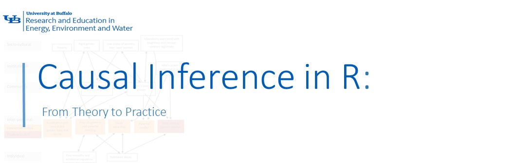

Causal Inference in R: From Theory to Practice
Causal inference is a scientific discipline focused on estimating the effects of interventions, treatments, or policies on outcomes of interest. It addresses questions such as “What would happen if X were changed?” rather than simply examining associations with X. In contrast to predictive modeling, which aims to minimize forecasting error, causal inference requires explicit reasoning about counterfactuals, considering what the outcome would have been for the same unit under alternative treatment conditions.
The foundational framework for modern causal inference is the potential outcomes model (also known as the Rubin Causal Model). For each unit \(i\), we define two potential outcomes:
- \(Y_i(1)\)): the outcome if unit \(i\) receives treatment
- \(Y_i(0)\): the outcome if unit \(i\) does not receive treatment
The individual treatment effect is \(Y_i(1) - Y_i(0)\), but we only ever observe one of these outcomes—the other remains counterfactual. This is the Fundamental Problem of Causal Inference. Consequently, we estimate average effects over populations, such as the Average Treatment Effect (ATE):
\[
\text{ATE} = \mathbb{E}[Y(1) - Y(0)]
\]
or the Average Treatment Effect on the Treated (ATT):
\[ \text{ATT} = \mathbb{E}[Y(1) - Y(0) \mid D = 1] \]
where \(D\) is the binary treatment indicator.
To identify these quantities from observational data, we must make untestable assumptions—most critically, conditional unconfoundedness (or ignorability):
\[ (Y(1), Y(0)) \perp D \mid X \] meaning that, conditional on observed covariates \(X\), treatment assignment is as good as random. Additional assumptions include overlap (\(0 < P(D=1 \mid X) < 1\)) and consistency (the observed outcome equals the potential outcome under the assigned treatment).
A complementary perspective uses Directed Acyclic Graphs (DAGs) to encode structural assumptions about relationships among variables. DAGs help identify confounders, colliders, and mediators, and guide the application of graphical criteria like the backdoor criterion to select valid adjustment sets.
Correlation vs. Causation: Understanding the Difference
Correlation describes a statistical association between two variables, meaning they tend to vary together in some observable pattern. When one increases, the other often increases too, or perhaps Correlation describes a statistical association between two variables, indicating that they tend to vary together in a consistent pattern. An increase in one variable may correspond with an increase in the other (positive correlation) or a decrease (negative correlation). However, this relationship is observational and does not explain the underlying reason for the association. In contrast, causation asserts that a change in one variable directly produces or leads to a change in the other. Establishing causation requires substantially more rigorous evidence than merely observing that two events occur simultaneously.
A well-known real-world example demonstrates this distinction. Observational studies have indicated that individuals who consume large amounts of coffee appear to have higher rates of lung cancer. This observation might initially suggest that coffee consumption harms the lungs. However, the relationship is largely spurious. The actual causal factor is smoking; individuals who smoke cigarettes, which contain carcinogens that significantly increase lung cancer risk, also tend to drink more coffee as part of their lifestyle. Smoking serves as a confounding variable, influencing both coffee consumption and lung cancer risk, and thereby creating the illusion of a direct association. When researchers control for smoking, either by comparing only non-smokers or by statistically adjusting for smoking history, the apparent link between coffee and lung cancer largely disappears. Smoking causes lung cancer, whereas coffee consumption is only correlated with it due to its shared association with smoking behavior.
Several visual examples further clarify this principle. A classic diagram demonstrates how a confounding variable can create the illusion of causation between two variables that are actually unrelated once the third factor is considered:
Types of Causal Effects
Causal inference aims to estimate the effect of a treatment, intervention, or exposure on an outcome while accounting for confounding and other biases. Unlike standard statistical modeling—which often focuses on association—causal inference requires explicit assumptions about data-generating processes and counterfactual reasoning. Below are the methods used in causal inference, broadly categorized by approach:
Randomized Controlled Trials (RCTs)
- Gold standard for causal inference.
- Participants are randomly assigned to treatment or control groups, ensuring that, on average, confounders are balanced.
- Randomization breaks the link between potential confounders and treatment assignment, satisfying the ignorability assumption by design.
- Limitation: Often impractical, unethical, or expensive in real-world settings (e.g., you can’t randomly assign people to smoke).
Potential Outcomes Framework (Neyman–Rubin Causal Model)
- Provides the theoretical foundation for defining causal effects (e.g., ATE, ATT) using counterfactuals.
- Not a method per se, but underlies most modern causal techniques.
- Requires assumptions: ignorability, overlap, and consistency.
Graphical Models (Directed Acyclic Graphs – DAGs)
- Visual tools to encode causal assumptions about relationships among variables.
- Help identify confounders, colliders, and mediators.
- Used with the backdoor criterion or frontdoor criterion to determine which variables to adjust for.
- Implemented in R via
dagittyandggdag.
Adjustment-Based Methods (for Observational Data)
Regression Adjustment
- Include confounders as covariates in a regression model (e.g., linear or logistic).
- Simple but sensitive to model misspecification and functional form assumptions.
Propensity Score Methods
Estimate the probability of receiving treatment given covariates \(X\): \(e(X) = P(T=1|X)\).
- Matching: Pair treated and control units with similar propensity scores (MatchIt).
- Stratification: Compare outcomes within propensity score bins.
- Inverse Probability Weighting (IPW): Weight units by \(1/e(X)\) or \(1/(1-e(X))\) to create a pseudo-population where treatment is independent of \(X\).
- Covariate Balancing Propensity Scores (CBPS): Optimize balance directly.
Doubly Robust Estimators
- Combine outcome modeling and propensity weighting (e.g., Augmented IPW or Targeted Maximum Likelihood Estimation – TMLE).
- Consistent if either the outcome model or the propensity model is correctly specified.
- Packages:
tmle,drgee,causalweight.
G-Methods (for Time-Varying Treatments & Confounders)
Used when treatments and confounders evolve over time (e.g., in longitudinal studies).
- Marginal Structural Models (MSMs) with IPTW
- G-computation (G-formula)
- Structural Nested Models
- Implemented in R via
ltmle,ipw, or custom code.
Instrumental Variable (IV) Analysis
Addresses unmeasured confounding by using an instrument \(Z\) that:
- Affects treatment \(T\)
- Does not affect outcome \(Y\) except through \(T\)
- Is independent of unmeasured confounders
- Affects treatment \(T\)
Common in econometrics (e.g., using distance to clinic as an instrument for treatment access).
Methods: Two-stage least squares (2SLS), LIML.
R packages:
AER::ivreg,ivmodel.
Difference-in-Differences (DiD)
- Compares changes in outcomes over time between a treatment group and a control group.
- Relies on the parallel trends assumption: in the absence of treatment, both groups would have followed the same trajectory.
- Extensions: Event-study designs, staggered DiD.
- R packages:
did,fixest,broom.
Synthetic Control Methods
- Constructs a weighted combination of control units to mimic the pre-treatment trajectory of a treated unit (e.g., a state or country).
- Ideal for policy evaluation with a single treated unit.
- R packages:
Synth,gsynth.
Machine Learning–Enhanced Causal Inference
- Double/Debiased Machine Learning: Uses cross-fitting and orthogonalization to estimate ATE with high-dimensional controls (
grf,DoubleML).
- Causal Forests: Estimate heterogeneous treatment effects (CATE) using modified random forests (
grf).
- Meta-learners: S-, T-, X-, R-learners combine ML algorithms to predict counterfactuals.
Mediation and Path Analysis
- Decomposes total effect into direct and indirect (mediated) effects.
- Requires strong assumptions (no unmeasured mediator-outcome confounding).
- R package:
mediation.
Summary Table
| Method | Best For | Key Assumption |
|---|---|---|
| RCT | Gold-standard experiments | Randomization |
| Propensity Score Matching | Observational binary treatment | Unconfoundedness, overlap |
| IPW / TMLE | Marginal effects, robustness | Correct propensity or outcome model |
| IV | Unmeasured confounding | Valid instrument |
| DiD | Panel data, policy evaluation | Parallel trends |
| Synthetic Control | Single-unit intervention | Convex combination of controls |
| Causal Forests | Heterogeneous effects, ML | Consistency, overlap |
These methods form a toolkit that researchers select based on data structure, assumptions, and research question. In practice, triangulation—using multiple methods to test robustness—is strongly recommended.
Causal Inference in Survival Analysis
In many applications—such as clinical trials, epidemiology, or reliability engineering—the outcome of interest is time until an event (e.g., death, failure, recovery). Standard survival models (e.g., Cox proportional hazards) estimate associations but do not automatically yield causal effects unless assumptions are carefully addressed.
Causal survival analysis aims to estimate quantities like the causal hazard ratio or the difference in survival curves under treatment vs. control. Key challenges include:
- Time-varying treatments and confounders
- Censoring mechanisms that may depend on covariates
- Violations of the proportional hazards assumption
Methods include:
- Inverse Probability of Treatment Weighting (IPTW) for time-varying treatments (e.g., using
ipworltmle) - Marginal Structural Models (MSMs) to estimate population-average effects
- G-formula for dynamic treatment regimes
Example: In HIV research, one might ask: “Does initiating antiretroviral therapy (ART) at CD4 count >500 cells/μL reduce mortality compared to delaying until <350?” Here, CD4 count is a time-varying confounder affected by prior treatment—requiring MSMs or g-methods for valid inference.
Causal Inference in Machine Learning
Machine learning (ML) excels at prediction but often lacks built-in mechanisms for causal identification. However, recent advances integrate ML flexibility with causal rigor: - Double/debiased machine learning (Chernozhukov et al., 2018) uses cross-fitting and orthogonalization to estimate ATE with high-dimensional controls while preserving √n-consistency. - Causal forests (Wager & Athey, 2018) extend random forests to estimate heterogeneous treatment effects (CATE). - Meta-learners (e.g., S-, T-, X-, R-learners) combine supervised learners to approximate counterfactual functions.
These methods are especially valuable when:
- The number of covariates is large relative to sample size
- Nonlinearities and interactions are present
- Policy decisions require personalized treatment rules
Example: A digital health platform wants to know whether sending a reminder notification increases user engagement. With millions of users and hundreds of behavioral features, a causal forest can estimate who benefits most—enabling targeted interventions.
Causal Inference in R
R offers a mature, open-source ecosystem specifically designed for transparent, reproducible causal analysis. Its functional programming style integrates seamlessly with modern data workflows (tidyverse), while specialized packages implement state-of-the-art methods—from classical propensity score techniques to machine learning–enhanced estimators. Visualization tools (ggplot2, ggdag) aid in communicating assumptions and results, and R Markdown enables literate programming for full auditability. Moreover, R’s statistical rigor aligns with the inferential nature of causal questions, providing standard errors, confidence intervals, and sensitivity diagnostics out of the box.
List of Key R Packages for Causal Inference
| Purpose | Package(s) |
|---|---|
| DAGs & graphical models | dagitty, ggdag, pcalg, bnlearn |
| Propensity scores & matching | MatchIt, Matching, optmatch |
| Balance assessment | cobalt |
| Inverse probability weighting | ipw, WeightIt |
| Doubly robust & TMLE | tmle, ltmle, drgee, causalweight |
| Heterogeneous effects | grf (Generalized Random Forests) |
| Instrumental variables | AER, ivmodel, ivreg |
| Difference-in-differences | did, fixest, broom |
| Mediation | mediation |
| Synthetic controls | Synth, gsynth |
| Sensitivity analysis | EValue, rbounds |
| Causal discovery | causalDisco, SID |
Summary
Causal inference transforms observational data into actionable evidence—but only when assumptions are explicit, methods are appropriate, and diagnostics are rigorous. R provides a comprehensive toolkit to implement, validate, and communicate causal analyses across diverse domains.
By the end of this tutorial, you will be able to:
- Distinguish between association and causation using formal frameworks
- Construct and interpret DAGs to encode causal assumptions
- Estimate causal effects using matching, weighting, and outcome modeling
- Diagnose violations of key assumptions (e.g., lack of overlap, residual confounding)
- Extend causal reasoning to time-to-event and machine learning contexts
- Report findings with appropriate uncertainty quantification and visualizations
Recommended Resources
- Books:
- Causal Inference: The Mixtape – Scott Cunningham (free online)
- Causal Inference: What If – Hernán & Robins
- Mostly Harmless Econometrics – Angrist & Pischke
- Causal Inference: The Mixtape – Scott Cunningham (free online)
- Online Courses:
- Harvard’s PH259x (edX)
- Stanford’s Causal Inference MOOC (Brady Neal)
- Harvard’s PH259x (edX)
- R Vignettes & Tutorials:
MatchItandcobaltofficial vignettes
grfdocumentation with real-world examples
dagittyweb interface + R integration guide